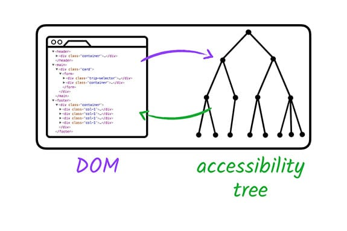
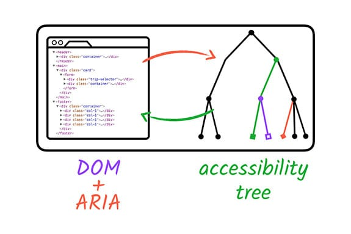

ARIA
ARIA per a accessibilitat
1. Què és ARIA?
ARIA (Accessible Rich Internet Applications) és un conjunt d'atributs que s'afegeixen al codi HTML per millorar l'accessibilitat de les aplicacions web dinàmiques, com ara les que utilitzen JavaScript i altres tecnologies interactives. ARIA permet que les aplicacions més complexes siguin accessibles per a usuaris amb discapacitats mitjançant la informació addicional que els proporciona als lectors de pantalla i altres tecnologies d'assistència.
Els atributs ARIA s'utilitzen per proporcionar informació sobre els elements que no es pot transmetre de manera natural mitjançant l'HTML estàndard, com ara el rol, l'estat o les propietats d'un element interactiu.
Per exemple... aquest codi
Si bé això funciona bé per a usuaris amb visió, un lector de pantalla no proporcionarà cap indicació que l'element serveix com a casella de verificació, per la qual cosa els usuaris amb baixa visió poden perdre l'element completament.
No obstant això, mitjançant l'ús d'atributs ARIA, podem proporcionar a l'element la informació que li falta perquè el lector de pantalla la puga interpretar correctament. Ací, afegim els atributs role i aria-checked per identificar explícitament l'element com una casella de verificació i especificar que està marcada per defecte. L'element de llista ara s'afegirà a l'arbre d'accessibilitat i un lector de pantalla el reportarà correctament com una casella de verificació.
| HTML | |
|---|---|
Per tant, el que realitza Aria és una espècie de transformació del DOM.


2. Per què utilitzar ARIA?
En les aplicacions web modernes, molts elements interactius es creen mitjançant JavaScript o CSS (com els carrossels d'imatges, els menús desplegables o els formularis dinàmics). Aquests elements, per si sols, poden ser difícils d'accedir per a persones amb discapacitat visual o altres dificultats, ja que no s'inclouen en l'HTML de manera que els lectors de pantalla o altres tecnologies d'assistència els puguin identificar correctament. ARIA ajuda a solucionar aquest problema afegint metadades als elements.
3. Atributs ARIA Principals
A continuació, es presenten els atributs ARIA més comuns que pots utilitzar en el teu lloc web per millorar-ne l'accessibilitat:
3.1. Role (rol)
L'atribut role defineix el tipus d'element o control. És essencial per indicar a un lector de pantalla o tecnologia d'assistència quin tipus d'element es troba a la pàgina.
Exemple:
| HTML | |
|---|---|
<button> semàntic. Això és útil quan es creen interfícies dinàmiques mitjançant JavaScript.
Roles comuns:
- role="button": Defineix un botó.
- role="navigation": Indica un element de navegació.
- role="dialog": Identifica una finestra emergent.
- role="alert": Defineix una notificació urgent.
3.2. ARIA State and Properties (Estats i propietats ARIA)
Els estats i les propietats ARIA es poden utilitzar per proporcionar informació sobre l'estat de l'element (com si està actiu o desactivat) o altres propietats específiques de l'element.
Exemples:
- aria-checked: Indica si un element de tipus caixa de selecció (<input type="checkbox">) està seleccionat o no.
| HTML | |
|---|---|
-
aria-expanded: Indica si un element desplegable està obert o tancat.
-
aria-disabled: Indica que un element interactiu està deshabilitat.
HTML
3.3. ARIA Live Regions (Regions Vives ARIA)
Les regions vives ARIA permeten actualitzar el contingut d'una pàgina sense que el lector de pantalla hagi de fer una nova exploració completa. Aquests canvis es comuniquen immediatament a l'usuari, la qual cosa és útil en aplicacions dinàmiques on el contingut pot canviar en temps real (com en un formulari de validació).
Exemple:
| HTML | |
|---|---|
3.4. aria-label i aria-labelledby
Aquests atributs proporcionen una manera d'etiquetar elements d'una manera més accessible per als usuaris amb discapacitat visual.
-
aria-label: Proporciona un text alternatiu per a un element. Es pot utilitzar quan no s'hi pot incloure un text visible.
HTML -
aria-labelledby: Permet associar un element amb el text d'un altre element, normalment un títol o una descripció.
3.5. Tabindex
L'atribut tabindex no és específicament d'ARIA, però s'utilitza sovint en combinació amb atributs ARIA per controlar l'ordre de navegació per teclat. Estableix l'ordre de les interaccions de teclat per als elements de la pàgina.
Exemple:
L'ordre de navegació amb la tecla "Tab" serà primer "Botó 1" i després "Botó 2".4. Millors pràctiques per a l'ús d'ARIA
-
Evita l'ús excessiu d'ARIA: Si l'element ja té una semàntica HTML clara (com
<button>per a botons o<a>per a enllaços), no cal afegir-hi atributs ARIA. L'ús excessiu d'ARIA pot fer que el lloc sigui més difícil de mantenir i pot interferir amb l'experiència de l'usuari. -
Usar ARIA només quan sigui necessari: ARIA és útil quan no existeix un element semàntic HTML que pugui proporcionar la mateixa funcionalitat o informació. Si és possible, utilitza elements HTML semàntics abans d'afegir ARIA.
-
Testar amb lectors de pantalla: Després de fer canvis amb ARIA, és important provar el lloc web amb eines com NVDA, JAWS o VoiceOver per verificar que la implementació funcioni com s'espera.
5. Exemple complet
A continuació, tens un exemple complet d'un component interactiu amb ARIA:
Aquest formulari utilitza atributs ARIA per millorar l'accessibilitat per als usuaris que utilitzen eines d'assistència, com un lector de pantalla.